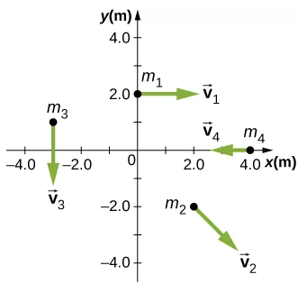

B8.x Problems#
Problem B8.1
A 0.2-kg particle is travelling in the xy-plane along the line y = 2.0 m with a velocity 5.0 m/s. What is the angular momentum of the particle about the origin when x = 5.0 m?
This problem is a slightly modified version from OpenStax. Access for free at https://openstax.org/books/university-physics-volume-1/pages/11-problems
Show code cell source
import numpy as np
# use l = r x p = rpsin(theta)
# p is the linear momentum: px = m*vx
# r is the directed line segment from origin to the particle's location at that instant.
m = 0.2
v = 5.0
y = 2.0
x = 5.0
#magnitude of vector r
r = np.sqrt(x**2 + y**2)
#magnitude of momentum vector
p = m*v
#angle between r and p vectors
theta = np.arctan(y/x)
l = r*p*np.sin(theta)
print('Magnitude of angular momentum: '+str(l))
#direction from RHR: negative z-direction
print('Direction: negative z-direction')
Show code cell output
Magnitude of angular momentum: 1.9999999999999998
Direction: negative z-direction
Problem B8.2
A particle of mass 5.0 kg has position vector \(\vec{r} = (2.0\hat{i} - 3.0\hat{j})~\textrm{m}\) at a particular instant of time when its velocity is \(\vec{v} = (3.0\hat{i})~\textrm{m/s}\) with respect to the origin. What is the angular momentum of the particle?
This problem is a slightly modified version from OpenStax. Access for free at https://openstax.org/books/university-physics-volume-1/pages/11-problems
Show code cell source
# use l = r x p
# since i x i = 0, only the product jxi = -k will remain:
# l = r x p = (2.0i - 3.0j) x (5.0)(3.0i)
#magnitude
l = (3.0)*(5.0)*(3.0)
#direction: (-)(j x i) = (-)(-k) = k
print('Magnityude of angular momentum: '+str(l))
print('Direction: +z direction')
Show code cell output
Magnityude of angular momentum: 45.0
Direction: +z direction
Problem B8.3
Use the right-hand rule to determine the directions of the angular momenta about the origin of the particles as shown below. The z-axis is out of the page.
This problem is a slightly modified version from OpenStax. Access for free at https://openstax.org/books/university-physics-volume-1/pages/11-problems
Show code cell source
# Particle 1
# directed line segment is from origin to (x,y) = (0,2): CW rotation
print('Particle 1: -z')
# Particle 2
# directed line segment is from origin to (x,y) = (2,-2): no rotation
print('Particle 1: zero angular momentum')
# Particle 3
# directed line segment is from origin to (x,y) = (-3,1): CCW rotation
print('Particle 1: +z')
# Particle 4
# directed line segment is from origin to (x,y) = (4,0): no rotation
print('Particle 1: zero angular momentum')
Show code cell output
Particle 1: -z
Particle 1: zero angular momentum
Particle 1: +z
Particle 1: zero angular momentum
Problem B8.4
Suppose the particles in the preceding problem have masses (in kg): \(m_1 = 0.10\), \(m_2 = 0.20\), \(m_3 = 0.30\), and \(m_4 = 0.40\). The velocities (in m/s) of the particles are: \(\vec{v}_1 = 2.0\hat{i}\), \(\vec{v}_2 = 3.0\hat{i} - 3.0\hat{j}\), \(\vec{v}_3 = -1.5\hat{j}\), \(\vec{v}_4 = -4.0\hat{i}\).
Calculate the angular momentum of each particle about the origin.
What is the total angular momentum of the four-particle system about the origin?
This problem is a slightly modified version from OpenStax. Access for free at https://openstax.org/books/university-physics-volume-1/pages/11-problems
Show code cell source
import numpy as np
# Particle 1: negative angular momentum
# directed line segment is from origin to (x,y) = (0,2):
r1 = 2.0
m1 = 0.10
v1 = 2.0
theta1 = np.pi/2
l1 = r1*m1*v1*np.sin(theta1) #magnitude
l1 = -l1 #negative direction
print('Particle 1: '+str(l1))
# Particle 2: 0
print('Particle 2: '+str(0))
# Particle 3: positive angular momentum
# directed line segment is from origin to (x,y) = (-3,1):
r3 = np.sqrt((-3.0)**2 + (1)**2)
m3 = 0.30
v3 = 1.5
theta3 = np.arctan(1.0/3.0)+np.pi/2
l3 = r3*m3*v3*np.sin(theta3)
print('Particle 3: +'+str(l3))
# Particle 4: 0
print('Particle 4: '+str(0))
#total
l_tot = l1 + l3
print('Total angular momentum: '+str(l_tot))
Show code cell output
Particle 1: -0.4
Particle 2: 0
Particle 3: +1.3499999999999999
Particle 4: 0
Total angular momentum: 0.9499999999999998
Problem B8.5
Consider a basketball spinning at a rate of 4.0 rev/s. What is the spin angular momentum of the basketball? HINT: you will need to look up the mass of a basketball and its radius. Assume the basketball is a hollow sphere.
Problem B8.6
The Sun’s mass is \(2.0\times 10^{30}\) kg, its radius is \(7.0\times 10^5\) km, and it has a rotational period of approximately 28 days. If the Sun should collapse into a white dwarf of radius \(3.5\times 10^3\) km, what would its period be if no mass were ejected and a sphere of uniform density can model the Sun both before and after?
This problem is a slightly modified version from OpenStax. Access for free.
Problem B8.7
A ride at a carnival has four spokes to which pods are attached that can hold two people. The spokes are each 15 m long and are attached to a central axis. Each spoke has mass 200.0 kg, and the pods each have mass 100.0 kg. If the ride spins at 0.2 rev/s with each pod containing two 50.0 kg children, what is the new spin rate if all the children jump off the ride? Assumen the kids can be considered as point masses.
This problem is a slightly modified version from OpenStax. Access for free.
Problem B8.8
Calculate the angular momentum of Earth in its orbit around the Sun.
Compare this angular momentum with the angular momentum of Earth about its axis.
This problem is a slightly modified version from OpenStax. Access for free.
Show code cell source
import numpy as np
# center to center distance Sun-Earth: 1 AU = 1.496 x 10^11 m
# mass of earth: 5.972 x 10^24 kg
# radius of earth: 6.378 x 10^6 m
#-----------------
# PART 1
#-----------------
R = 1.496E11
M = 5.972E24
# Find the orbital angular momentum
# L = R x P = RPsin(theta)
# theta = 90 degrees
# tangential speed: distance/time
D = 2*np.pi*R
T = (365)*(24)*(3600) # (365 days)*(24 hrs/day)*(3600 s/1 hr)
V = D/T
L_o = R*M*V
print('Orbital angular momentum: '+str(L_o))
#-----------------
# PART 2
#-----------------
R_E = 6.378E6
M = 5.972E24
# Find the spin angular momentum
# L = I*Omega
# Assume solid, uniform sphere
I = (2.0/5.0)*M*R_E**2
Omega = (1.0/24)*(2*np.pi)*(1.0/3600) # (1 rev/24 hr)*(2 pi rad/ 1 rev)*(1 hr/ 3600 s)
L_s = I*Omega
print('Spin angular momentum: '+str(L_s))
Show code cell output
Orbital angular momentum: 2.662908522058627e+40
Spin angular momentum: 7.066672196816025e+33